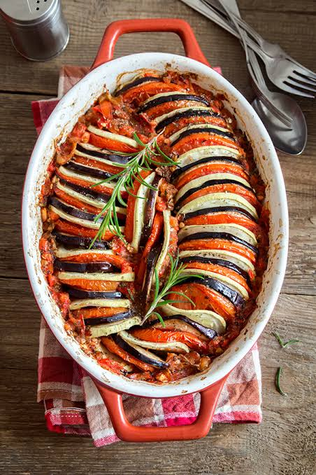
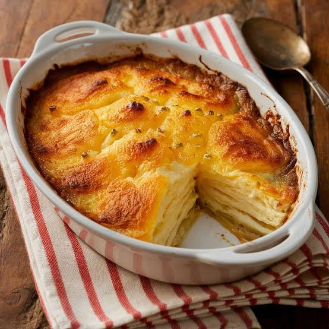

Croissant
The French croissant is a world-famous, buttery, and flaky pastry. Freshly baked every morning, it features a golden crispy exterior and soft, airy layers inside, making it the quintessential French breakfast companion with coffee.

Ratatouille
Ratatouille is a traditional French Provencal stewed vegetable dish. Beautifully baked with thinly sliced zucchini, eggplant, tomatoes, and seasoned with herbs, it is a healthy, vibrant, and flavorful culinary masterpiece.

Gratin Dauphinois
Gratin Dauphinois is a classic French casserole made with thinly sliced potatoes baked in cream, milk, and garlic, topped with melted cheese until golden and bubbly. It is a rich, creamy, and comforting culinary delight.